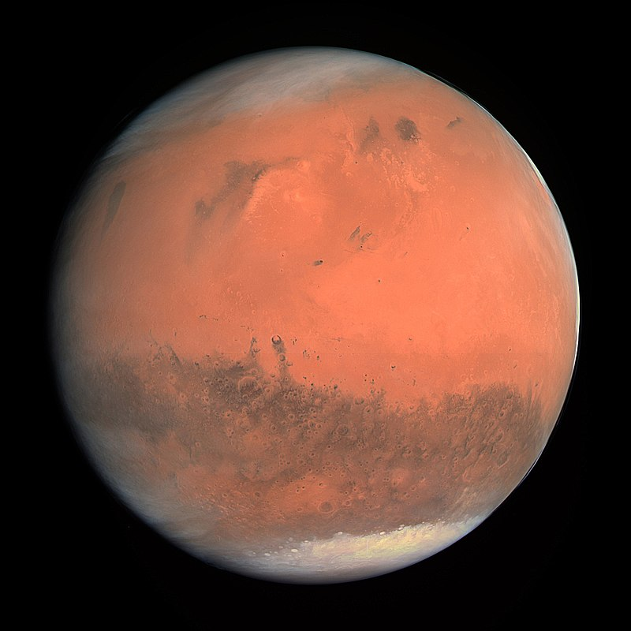

Sao Hỏa
Sao Hỏa hay Hỏa tinh (chữ Hán: 火星 (bính âm: Huǒxīng), tiếng Anh: Mars) là hành tinh thứ tư tính từ Mặt Trời và là hành tinh có kích thước bé thứ hai trong Hệ Mặt Trời, chỉ lớn hơn Sao Thủy. Nó thường được gọi với tên khác là "Hành tinh Đỏ", do sắt oxide có mặt rất nhiều trên bề mặt hành tinh làm cho bề mặt nó hiện lên với màu đỏ đặc trưng. Sao Hỏa là một hành tinh đất đá với một khí quyển mỏng, có những đặc điểm trên bề mặt có nét giống với cả các hố va chạm trên Mặt Trăng và các núi lửa, thung lũng, sa mạc và chỏm băng ở cực trên của Trái Đất. Ngày và mùa trên sao Hỏa tương đối giống Trái Đất, do chu kì tự quay và độ nghiêng của trục quay so với mặt phẳng xích đạo là như nhau. Ngọn núi Olympus Mons trên sao Hỏa là núi lửa lớn nhất và cao nhất từng được biết tới trong Hệ Mặt Trời, còn hẻm núi Velles Marineris là một trong những hẻm núi lớn nhất trong Hệ. Lòng chảo Borealis bằng phẳng nằm ở bán cầu Bắc bao phủ tới 40% bề mặt hành tinh và có thể là một hố va chạm khổng lồ trong quá khứ. Hai mặt trăng Phobos và Deimos của sao Hỏa đều nhỏ và có hình thù kì lạ. Sao Hỏa đã được thám hiểm bởi vài con tàu vũ trụ. Mariner 4 là con tàu đầu tiên đặt chân lên ngôi sao đỏ. Được NASA phóng vào không gian ngày 28 tháng 11 năm 1964, nó tiếp cận gần hành tinh nhất vào ngày 15 tháng 7 năm 1965. Mariner 4 đã phát hiện vành đai phóng xạ yếu của sao Hỏa, khoảng 0,1% của Trái Đất, và chụp những bức hình đầu tiên của một hành tinh khác trong vũ trụ. Tàu vũ trụ đặt chân lên sao Hỏa gần đây nhất là Tianwen-1 của CNSA và tàu thám hiểm Zhurong vào ngày 14 tháng 5 năm 2021. Tàu thám hiểu Zhurong đựoc phóng thành công vào ngày 22 tháng 5 năm 2021, giúp Trung Quốc trở thành quốc gia thứ hai phóng thành công một tàu thám hiểm lên sao Hỏa, sau Mĩ.
Về đặc tính vật lý: Bán kính của Sao Hỏa xấp xỉ bằng một nửa bán kính của Trái Đất, với diện tích bề mặt chi hơi nhỏ hơn tổng diện tích đất liền của Trái Đất.Tỷ trọng của nó nhỏ hơn của Trái Đất, với thể tích chỉ bằng 15% thể tích Trái Đất và khối lượng chỉ bằng 11%, do đó chỉ bằng 38% trọng lực bề mặt của Trái Đất. Trong khi Sao Hỏa có đường kính và khối lượng lớn hơn Sao Thủy thì Sao Thủy lại có tỷ trọng cao hơn. Điều này làm cho hai hành tinh có giá trị gia tốc hấp dẫn tại bề mặt gần bằng nhau-của Sao Hỏa chỉ lớn hơn có 1%. Sao Hỏa cũng là hành tinh có giá trị kích thước, khối lượng và gia tốc hấp dẫn bề mặt ở giữa khi so với Trái Đất và Mặt Trăng (Mặt Trăng có đường kính bằng một nửa của Sao Hỏa, trong khi Trái Đất có đường kính gấp đôi Hỏa Tinh; Trái Đất có khối lượng gấp chín lần khối lượng Sao Hỏa trong khi Mặt Trăng có khối lượng chỉ bằng một phần chín so với Hỏa Tinh). Màu sắc vàng cam của bề mặt Sao Hỏa là do lớp phủ chứa sắt(III) oxide, thường được gọi là hematit, hay rỉ sét.Những màu sắc bề mặt phổ biến khác bao gồm vàng, nâu, màu nâu vàng và hơi xanh lục, tùy thuộc vào những khoáng sản có mặt.

Về địa chất: Tuơng tự Trái Đất, Sao Hỏa đặc trưng với một lõi kim loại dày bao phủ bởi một lớp vật chất ít dày hơn. Những mô hình hiện tại về bên trong Hỏa Tinh chỉ ra lõi của nó chứa chủ yếu là sắt và nickel với khoảng 16-17% lưu huỳnh. Lõi sắt(II) sunfit này có trạng thái lỏng một phần, và được cho là giàu nguyên tố nhẹ gấp hai lần lõi Trái Đất. Lõi được bao quanh bởi một lớp phủ silicat, lớp này hình thành lên sự kiến tạo và đặc điểm núi lửa của hành tinh, nhưng hiện nay những hoạt động này đã ngừng hẳn. Bên cạnh silicon và oxy, những nguyên tố phổ biến nhát trong vỏ sao Hỏa là sắt, ma-giê, nhôm, canxi và kali. Độ dày trung bình của lớp vỏ là khoảng 50 km, với phần dày nhất lên tới 125 km. Để so sánh, vỏ trái Đất trung bình dày 40 km, chỉ bằng một phần ba Sao Hỏa khi so với tỉ lệ đường kính của hai hành tinh.